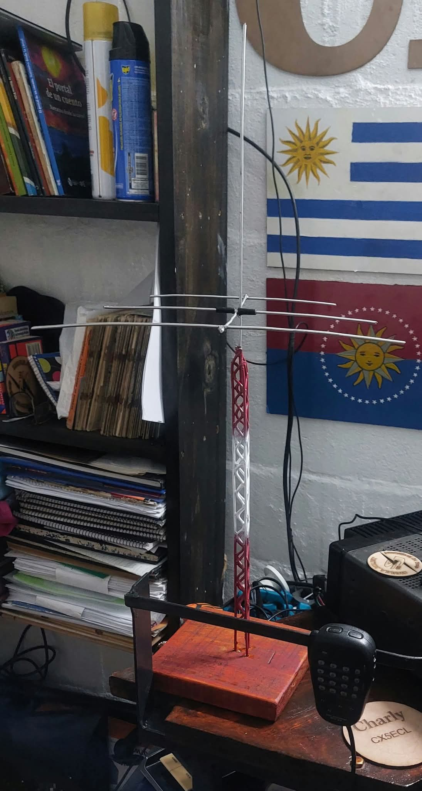

  <style> .contenedor { display: flex; /* Flexbox para organizar columnas */ justify-content: space-between; /* Espacio entre columnas */ } .columna { flex: 1; /* Todas las columnas ocupan el mismo espacio */ padding: 5px; margin: 5px; background: none; text-align: center; } </style> <div class="galeria"> <!-- Agregá más imágenes aquí --> </div> </body> </html> <style> .galeria { display: flex; flex-wrap: wrap; justify-content: center; gap: 15px; padding: 20px; background-color: #1a1a1a; /* fondo oscuro tipo panel táctico */ border: 2px solid #3a3a3a; } .galeria img { width: 300px; height: 200px; object-fit: cover; border: 2px solid #556B2F; /* verde oliva militar */ border-radius: 6px; box-shadow: 0 4px 10px rgba(0,0,0,0.5); transition: transform 0.3s ease; } .galeria img:hover { transform: scale(1.05); box-shadow: 0 6px 15px rgba(255,255,255,0.2); } </style> <div class="galeria">    <!-- Agregá más imágenes acá --> </div><style>
  .galeria {
    display: flex;
    flex-wrap: wrap;
    justify-content: center;
    gap: 15px;
    padding: 20px;
    background-color: #1a1a1a;
    border: 2px solid #3a3a3a;
  }
.galeria .imagen-con-marca::after {
  content: "📡 CX5EC | CVC5028";
  position: absolute;
  top: 50%;
  left: 50%;
  transform: translate(-50%, -50%);
  font-size: 18px;
  color: rgba(0, 255, 0, 0.4); /* Verde táctico con transparencia */
  font-family: 'Courier New', monospace;
  pointer-events: none;
  white-space: nowrap;
}
<!-- Lightbox táctico -->
<div id="lightbox" style="display:none; position:fixed; top:0; left:0; width:100%; height:100%; background:rgba(0,0,0,0.95); justify-content:center; align-items:center; z-index:9999;">
  
</div>

<script>
  document.querySelectorAll('.galeria img').forEach(img => {
    img.style.cursor = 'pointer';
    img.addEventListener('click', () => {
      document.getElementById('lightbox-img').src = img.src;
      document.getElementById('lightbox').style.display = 'flex';
    });
  });

  document.getElementById('lightbox').addEventListener('click', () => {
    document.getElementById('lightbox').style.display = 'none';
  });
</script>

</div>
  .imagen-con-marca {
    position: relative;
    display: inline-block;
  }

  .imagen-con-marca img {
    width: 300px;
    height: 200px;
    object-fit: cover;
    border: 2px solid #556B2F;
    border-radius: 6px;
    box-shadow: 0 4px 10px rgba(0,0,0,0.5);
    transition: transform 0.3s ease;
  }

  .imagen-con-marca img:hover {
    transform: scale(1.05);
    box-shadow: 0 6px 15px rgba(255,255,255,0.2);
  }

  .imagen-con-marca::after {
    content: "📡 CX5EC | CVC5028";
    position: absolute;
    bottom: 8px;
    right: 12px;
    font-size: 14px;
    color: rgba(0, 255, 0, 0.6);
    font-family: 'Courier New', monospace;
    pointer-events: none;
  } 
  <!-- index.html en la versión vieja -->
<meta http-equiv="refresh" content="0; URL='https://cx5ec.github.io/Charly-Ham-Radio'" />
  
</style>


